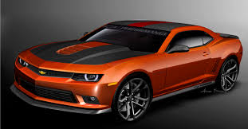
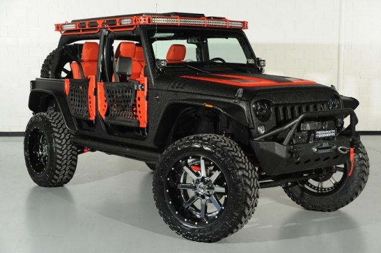

Here are 5 of my favorite cars.
This is a 2012 Ford Mustang Boss. I like ford more than all the other car companies because my family does, and they seem better.
It has 444 horsepower and it weighs around 3,480 pounds. It's top speed is 155 mph, and it gets up to 60 mph in 4 seconds. It also has better handling than most high powered cars.
For the mustang Click Here

This is the Camaro, a chevy car. Camaros are my favorite types of cars because I think they look the best.
It was a different car before 1966, but they made the camaro for a better car overall. It has become it's own name, and is getting better by the year.
For Camaro information Click Here

These two cars are Dodge Vipers, made by Dodge. This use to be my favorite type of cars, but then I changed.
It has 645 horsepower and weighs around 3,370 pounds. It also has a v10 engine.
For more Dodge Viper information Click Here

This is the Jeep. I like jeeps, and I want to take a ride in one, which my brother is trying to get a jeep.
The origional Jeep was designed in just two days. And also no one knows where the name Jeep came from.
For Jeep information Click Here

This is a Ford Gt, I like Ford Gts a lot also because of how they look, and they are made by Fords.
The ford gt's horsepower is 550 hp